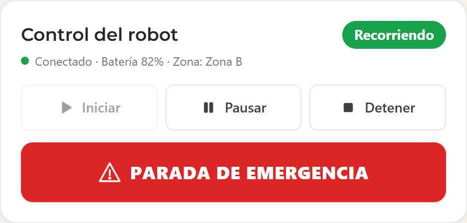
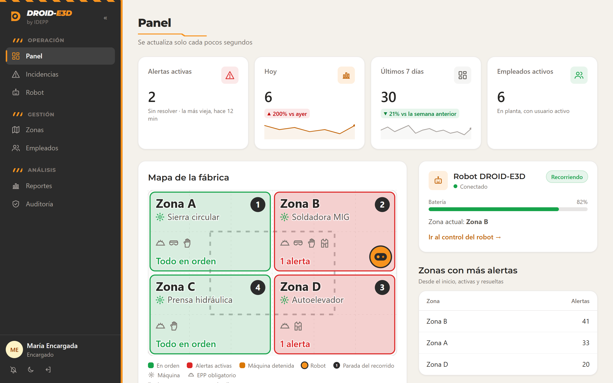
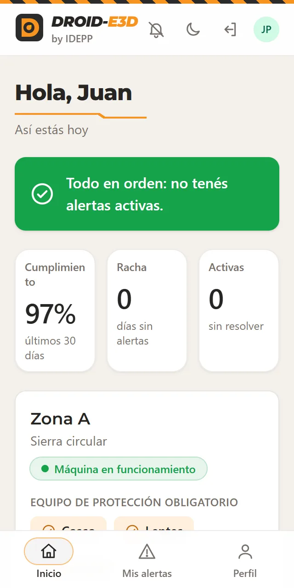
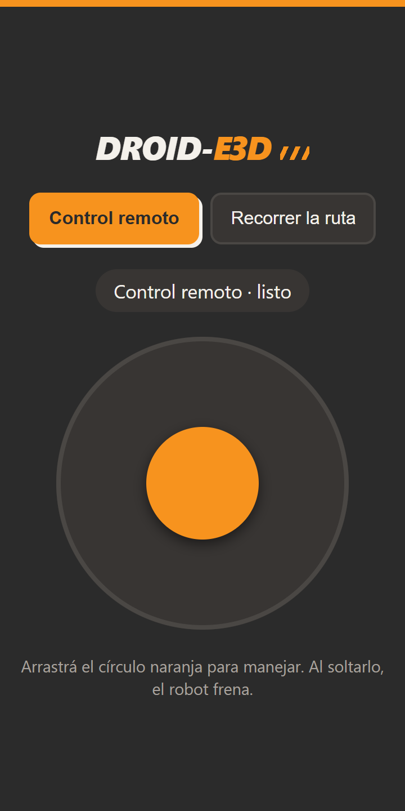

Gracias por elegir DROID-E3D. Desde hoy, un robot recorre su planta y les avisa en el momento si alguien trabaja sin su equipo de protección.
En este manual está todo lo que hace falta para usarlo todos los días: prenderlo, seguir las alertas en la web, manejarlo desde el celular, cuidarlo y resolver los problemas más comunes.
La instalación la hacemos nosotros, en un día: pegamos la ruta, conectamos todo al WiFi, instalamos la IA y capacitamos al equipo.
Un robot que recorre la planta y controla que cada persona tenga puesto su equipo de protección: casco, chaleco, barbijo o lentes, según lo que pida cada zona.
Funciona en tres partes que trabajan juntas:
Recorre solo la ruta marcada en el piso. Con la cámara de sus «ojos» mira a las personas que se cruza.
Mira el video de la cámara y detecta a quien trabaja sin su equipo.
Muestra las alertas con foto, el historial y los reportes, y deja manejar el robot.
Después de los 10 segundos, el robot sigue solo con su recorrido.
Todo lo que recibe la fábrica con DROID-E3D:
Cuatro pasos, y el robot sale a recorrer la planta.
La IA arranca sola y busca al robot y a la cámara en el WiFi. No hay que escribir nada.
Con su interruptor. Dejarlo apoyado sobre la cinta del piso, al inicio de la ruta.
Desde la PC o el celular, con el usuario y la contraseña del encargado.
En la sección Robot. El robot empieza a recorrer la ruta y el estado cambia a Recorriendo.
Si al prenderlo la pantalla del robot se pone azul, no encontró el WiFi. Ver la página 13.
En la sección Robot de la web.
Con su cargador, en el enchufe de su base.
Se puede apagar, o dejar prendida si hay otro turno.
Están en la web, en la sección Robot, junto al video en vivo de la cámara.

1 2 3 4| Botón | Qué hace |
|---|---|
| 1Iniciar | El robot empieza (o retoma) el recorrido de la ruta. |
| 2Pausar | Frena un momento. Con Iniciar sigue desde donde quedó. |
| 3Detener | Termina el recorrido. Se usa al final del turno. |
| 4Parada de emergencia | Frena el robot en el acto y lo deja bloqueado. |
Aparece arriba a la derecha de la tarjeta:
Para salir de una emergencia: primero tocar Detener y después Iniciar. Mientras está en emergencia, no se puede iniciar ni pausar.
Se entra desde la PC o el celular, con el usuario del encargado. Al entrar se ve el Panel:

1 2 3 4Todo de un vistazo. Se actualiza solo cada pocos segundos; tocando una zona del mapa se ve su detalle.
Todas las alertas, con filtros. En Ver detalle está la foto, quién era, la zona y qué le faltaba. Cuando ya se habló con la persona, se marca como resuelta.
El video en vivo de la cámara, dónde está el robot en el mapa, los botones para manejarlo (página 8) y la ruta.
Las zonas de la planta, el equipo de protección obligatorio en cada una y su lugar en el mapa.
Dar de alta, editar o dar de baja a cada empleado y cargar sus fotos de rostro, siempre con su consentimiento firmado. Si se da de baja a alguien, ya no entra a la web y sus fotos se borran, pero su historial se conserva.
Gráficos de alertas por día, por zona y por tipo de equipo, el cumplimiento promedio y el ranking de cumplimiento por empleado y por zona.
El registro de todo lo que se hizo en la web y de quién lo hizo.
Consejo: en el celular, la web se puede agregar a la pantalla de inicio como una app, para tener las alertas siempre a mano.
Cada empleado entra con su propio usuario, desde su celular.
Su cumplimiento, su racha de días sin alertas, el equipo obligatorio de su zona y dónde está el robot.
Todas sus alertas, con la foto y el detalle de cada una.
Sus datos, sus fotos de rostro y el tema de la pantalla, claro u oscuro.

Cada empleado ve solo sus propias alertas, nunca las de sus compañeros.
Además de recorrer la ruta solo, el robot se puede manejar a mano: por ejemplo, para llevarlo a otro lugar o para mostrarlo.
Conectar el celular al mismo WiFi que el robot.
En el navegador: droid-robot.local
Tocar Control remoto y arrastrar el círculo naranja. Al soltarlo, frena.
Ponerlo sobre la cinta y tocar Recorrer la ruta

Aunque se maneje a mano, la cámara y las alertas siguen funcionando.
Si la fábrica cambia el WiFi o su clave, o el robot se lleva a otra planta, el robot y la cámara no encuentran la red. Entonces, al prenderse, avisan así:
Desde el celular. La clave es droid-e3d
Si no se abre, entrar a 192.168.4.1
Escribir su clave y tocar Guardar.
Se reinicia y se conecta solo. Repetir con el otro (robot o cámara).
El WiFi tiene que ser de 2,4 GHz. El de 5 GHz no sirve.
Con estos cuidados, DROID-E3D funciona bien por mucho tiempo.
| Qué pasa | Qué hacer |
|---|---|
| No arranca al tocar Iniciar | Revisar que esté prendido, cargado y sobre la cinta. Si su pantalla está azul, ver la página 13. |
| La pantalla del robot está azul | No encuentra el WiFi. Configurarlo desde el celular (página 13). |
| La cámara tiene una luz roja | No encuentra el WiFi. Configurarla desde el celular (página 13). |
| En la web no se ve el video | Revisar que la cámara y la PC de la IA estén prendidas y en el mismo WiFi. |
| No llegan alertas | Revisar que la PC de la IA esté prendida. Si se reinició, esperar un minuto a que encuentre al robot y a la cámara. |
| Se sale de la ruta | Revisar que la cinta esté bien pegada y limpia. Si sigue, llámennos para calibrarlo. |
| Frena y no avanza | Puede haber algo delante. Despejar el paso. |
| Suena, pero nadie estaba sin su equipo | Puede ser un error de la IA (por ejemplo, por poca luz). Marcar la alerta como resuelta y avisarnos. |
El soporte y las visitas están incluidos en el abono mensual.